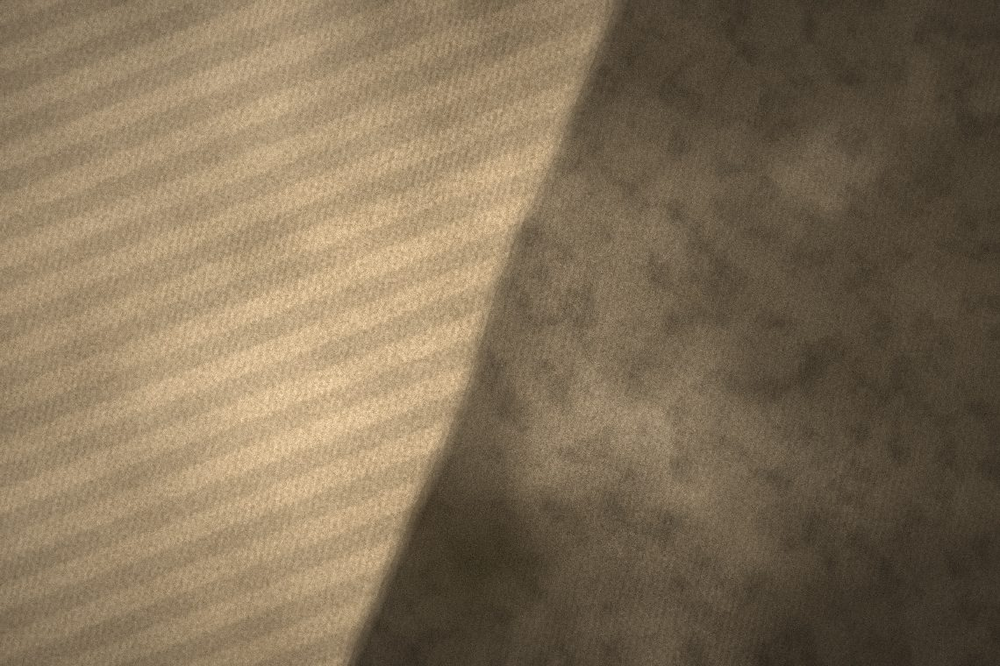
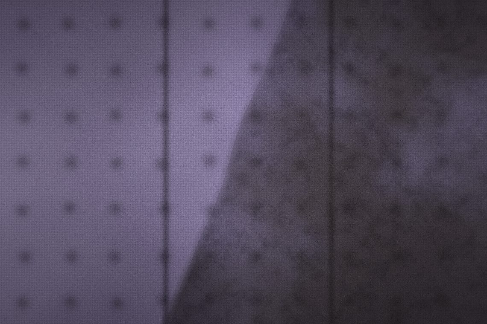
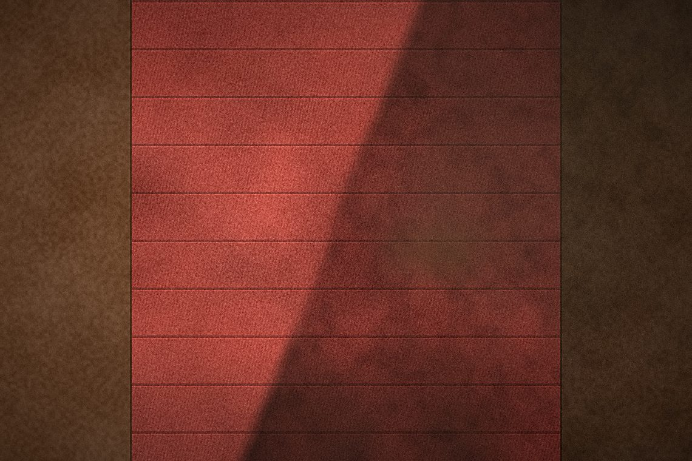

What gets cleaned
Three services, each done with equipment and technique matched to the surface. Every one comes with a free quote.
Carpet Cleaning in Louisville, KY
Vacuuming only ever gets the top of the pile. Everyday dirt, oils off bare feet, and pet dander work their way down to the backing, where a vacuum cannot reach and a rented box store machine rarely has the heat or suction to pull it back out.
Carpet cleaning here means hot-water extraction: a pre-treatment on traffic lanes and any visible spots, then a hot-water pass that flushes the pile and pulls the dirty water straight back out with the same machine. Furniture legs get blocked or tabbed so nothing bleeds onto wet carpet, and fans go down on the way out so rooms dry in hours, not days.
What's included
- Pre-inspection and a walkthrough of any spots before starting
- Pre-treatment on traffic lanes, pet areas, and stains
- Hot-water extraction cleaning, not a cold-water surface pass
- Furniture blocked or tabbed to protect it from wet carpet
- Fast-dry setup so rooms are walkable the same day

Upholstery Cleaning in Louisville, KY
Upholstery takes a different touch than carpet. Fabric holds less water before it starts to wick into the cushion foam, so the same amount of moisture that's fine on a carpet can leave a sofa damp for days if it's handled the same way.
Fabric gets identified and tested in an inconspicuous spot first, then cleaned with a lower-moisture method sized to what the cushion can actually handle — enough to lift the dirt and stains, not so much that it soaks through. Cushions are cleaned on both sides where they're removable.
What's included
- Fabric check and a spot test before any cleaning starts
- Low-moisture method matched to the fabric, not a one-size-fits-all soak
- Pre-treatment on visible stains and high-contact areas (arms, headrests)
- Removable cushions cleaned front and back
- Fast-dry technique so furniture is usable again the same day

Stair Cleaning in Louisville, KY
Stairs take more abuse per square foot than almost any other carpet in the house — every step is a pivot point — and they're awkward enough to clean that they're usually the first thing skipped on a DIY rental.
Each step gets treated and extracted individually, including the front edge (the nosing), which is where the heaviest wear and the most missed dirt usually sit. A narrower tool works the tight width of a staircase properly instead of rushing a wide wand down them.
What's included
- Every step and landing treated and extracted individually
- Stair nosing (the front edge) cleaned, not just the flat of the tread
- Pre-treatment on the worn center strip most stairs show first
- Handrail and baseboard areas wiped down where cleaning solution reaches
- Fast-dry pass so stairs are safe to use again quickly

One owner-operator. Every job.
There's no crew rotation and no franchise call center here — being straight about what will come clean, showing up in the window given, and leaving carpet dry and usable the same day.
Insured, not a gamble
Liability coverage in place before any equipment comes off the truck. Certificate available on request.
You get Trevor, not a call center
One person runs this business. The one who quotes the job is the one who shows up and cleans it.
Local to Louisville
This isn't a franchise dispatching a rotating crew. It's a Louisville-based operation, one job at a time.
Common questions
How long does carpet take to dry?
Can you get pet stains and odor out?
Do I need to move furniture first?
Do you use anything unsafe for kids or pets?
Will cleaning hurt my fabric?
How long until I can sit on it again?
Do you clean mattresses too?
Do you clean runners over hardwood stairs?
How soon can we use the stairs again?
Ready for cleaner carpets?
Free quotes across Louisville, KY. Send the basics and you'll get a firm number — usually within a business day.